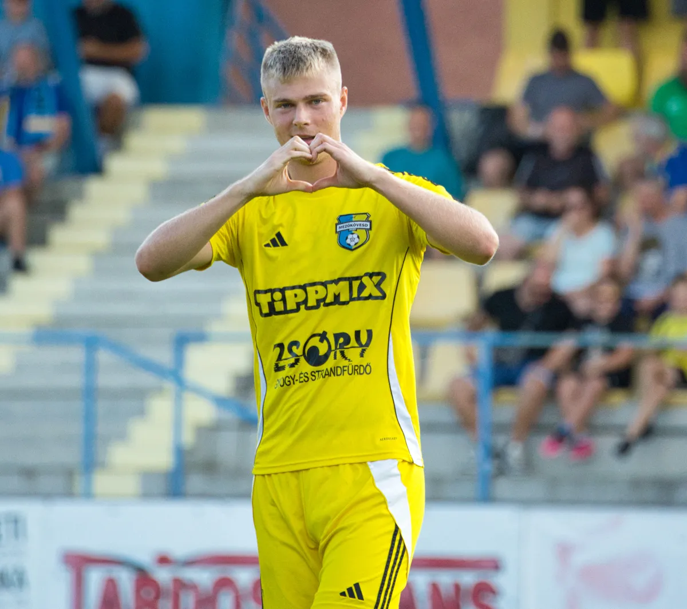

Szalai a KTE utánpótlásában nevelkedett, ahol 2020 nyarán került a felnőtt csapathoz.
A huszonkét éves támadó kölcsönszerződéssel kétszer megfordult a Vasasnál, majd 2023 nyarán igazolt Mezőkövesdre.
Az NBI-ben 2022 augusztusában debütált az angyalföldiek szerelésében, ahol további öt meccset gyűjtött még a legmagasabb szinten, majd huszonegyszer ’kövesden is pályára léphetett a legmagasabb osztályban.
Nyáron Paksra igazolt a fiatal center, akit viszont azonnal kölcsön adtak Mezőkövesdre, ahol bombaformában játszik Szalai, 9 meccsen 6 gólnál tart.
